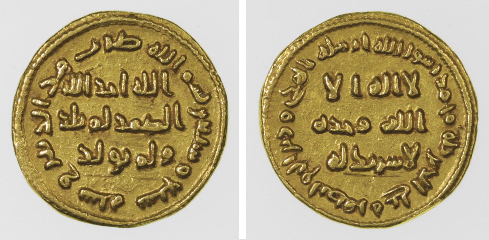
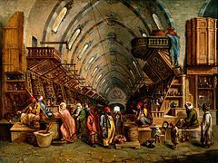

Sources: Source 1: Currency Source 2: Trade Source 3: Jobs
The coin that was used in Baghdad was the Dinar. During this time period, 1 Dinar would be worth about $1450 USD today. They would use this to pay for items in the marketplace, in addition to bartering. (image below)
The main center for trade in Baghdad was the Bazaar. This was a marketplace for just about everything you would need, such as artwork, clothing, food and other items. Many merchants would go here to sell and many people go here to buy. We recommend dropping by to get some good cuisine, or a piece of art handmade by locals.
Baghdad had many job opportunities. One example of a common job in Baghdad is the military. The military was a very important part of Baghdad society. The soldiers were mostly consisted of mamluks/ghilman. [2] These people were very important to the government, and were paid a regular salary from taxes collected from the people, or by land grants, which were called iqta. This worked well, but seemed to be corrupt or unorganized at times. Another example of a job in Baghdad were merchants, which were explained in the part about the marketplace.
 
-------------------------------------------------------------------------------------------------------------------------------------------------------
These sources can be found under the "Economy" section of the sources section.
{kind=link}
{kind=link}